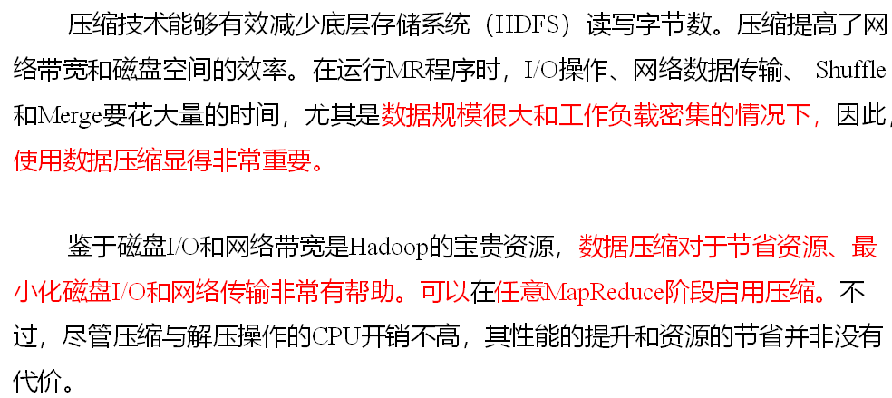
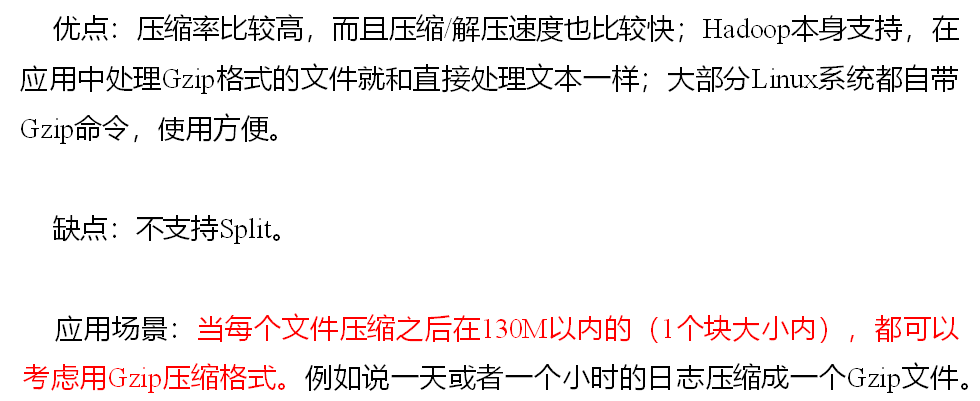
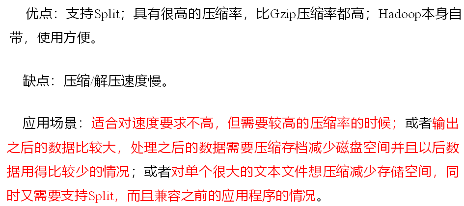
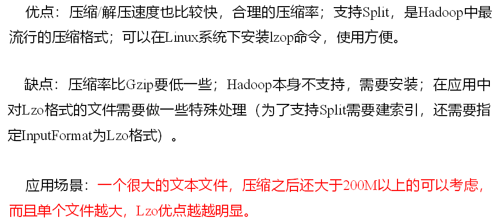
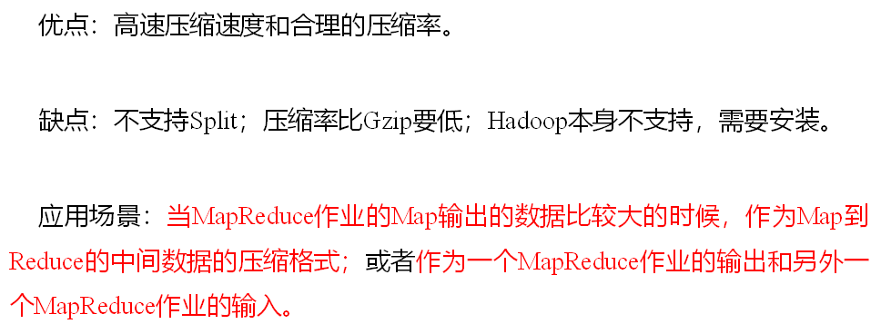
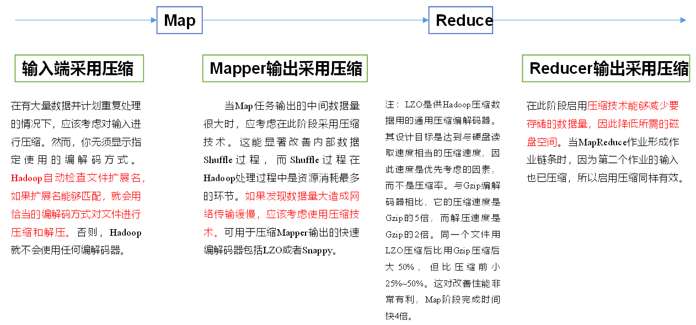
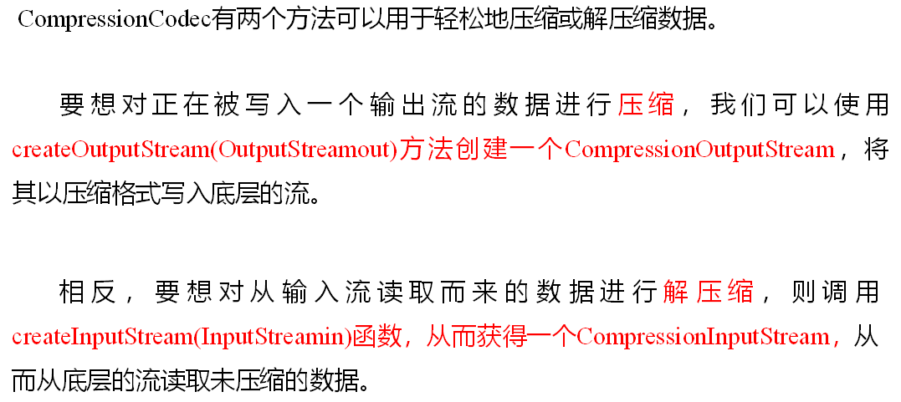

Hadoop
Hadoop数据压缩
概述

MR支持的压缩编码
| 压缩格式 | hadoop自带 | 算法 | 文件扩展名 | 是否可切分 | 换成压缩格式后，原来的程序是否需要修改 |
|---|---|---|---|---|---|
| DEFLATE | 是，直接使用 | DEFLATE | .deflate | 否 | 和文本处理一样，不需要修改 |
| Gzip | 是，直接使用 | DEFLATE | .gz | 否 | 和文本处理一样，不需要修改 |
| bzip2 | 是，直接使用 | bzip2 | .bz2 | 是 | 和文本处理一样，不需要修改 |
| LZO | 否，需要安装 | LZO | .lzo | 是 | 需要建索引，还需要指定输入格式 |
| Snappy | 否，需要安装 | Snappy | .snappy | 否 | 和文本处理一样，不需要修改 |
其中是否可切分代表压缩后是否还可以切分。若不可切分，则其处理数据不要在mapper之前。
为了支持多种压缩/解压缩算法，Hadoop引入了编码/解码器，如下表所示。
| 压缩格式 | 对应编码/解码器 |
|---|---|
| DEFLATE | org.apache.hadoop.io.compress.DefaultCodec |
| gzip | org.apache.hadoop.io.compress.GzipCodec |
| bzip2 | org.apache.hadoop.io.compress.BZip2Codec |
| LZO | com.hadoop.compression.lzo.LzopCodec |
| Snappy | org.apache.hadoop.io.compress.SnappyCode |
压缩性能的比较
| 压缩算法 | 原始文件大小 | 压缩文件大小 | 压缩速度 | 解压速度 |
|---|---|---|---|---|
| gzip | 8.3GB | 1.8GB | 17.5MB/s | 58MB/s |
| bzip2 | 8.3GB | 1.1GB | 2.4MB/s | 9.5MB/s |
| LZO | 8.3GB | 2.9GB | 49.3MB/s | 74.6MB/s |
http://google.github.io/snappy/
On a single core of a Core i7 processor in 64-bit mode, Snappy compresses at about 250 MB/sec or more and decompresses at about 500 MB/sec or more.
压缩方式选择
Gzip压缩

Bzip2压缩

Lzo压缩

Snappy压缩

压缩位置选择
压缩可以在MapReduce作用的任意阶段启用，如图

shuffle是最应该使用压缩技术的阶段（Map和Reduce之间）
压缩参数配置
要在Hadoop中启用压缩，可以配置如下参数：
| 参数 | 默认值 | 阶段 | 建议 |
|---|---|---|---|
| io.compression.codecs（在core-site.xml中配置） | org.apache.hadoop.io.compress.DefaultCodec, org.apache.hadoop.io.compress.GzipCodec, org.apache.hadoop.io.compress.BZip2Codec | 输入压缩 | Hadoop使用文件扩展名判断是否支持某种编解码器 |
| mapreduce.map.output.compress（在mapred-site.xml中配置） | false | mapper输出 | 这个参数设为true启用压缩 |
| mapreduce.map.output.compress.codec（在mapred-site.xml中配置） | org.apache.hadoop.io.compress.DefaultCodec | mapper输出 | 企业多使用LZO或Snappy编解码器在此阶段压缩数据 |
| mapreduce.output.fileoutputformat.compress（在mapred-site.xml中配置） | false | reducer输出 | 这个参数设为true启用压缩 |
| mapreduce.output.fileoutputformat.compress.codec（在mapred-site.xml中配置） | org.apache.hadoop.io.compress. DefaultCodec | reducer输出 | 使用标准工具或者编解码器，如gzip和bzip2 |
| mapreduce.output.fileoutputformat.compress.type（在mapred-site.xml中配置） | RECORD | reducer输出 | SequenceFile输出使用的压缩类型：NONE和BLOCK |
压缩实操案例
数据流的压缩和解压缩

测试一下如下压缩方式：
| DEFLATE | org.apache.hadoop.io.compress.DefaultCodec |
| gzip | org.apache.hadoop.io.compress.GzipCodec |
| bzip2 | org.apache.hadoop.io.compress.BZip2Codec |
package com.swenchao.mr.compress;
import org.apache.hadoop.conf.Configuration;
import org.apache.hadoop.fs.Path;
import org.apache.hadoop.io.IOUtils;
import org.apache.hadoop.io.compress.CompressionCodec;
import org.apache.hadoop.io.compress.CompressionCodecFactory;
import org.apache.hadoop.io.compress.CompressionInputStream;
import org.apache.hadoop.io.compress.CompressionOutputStream;
import org.apache.hadoop.util.ReflectionUtils;
import java.io.*;
/**
* @Author: Swenchao
* @Date: 2020/9/17 上午 10:54
* @Func: 压缩
*/
public class TestCompress {
public static void main(String[] args) throws IOException, ClassNotFoundException {
// 压缩（可以更换不同压缩方式）
compress("D:/scwri/Desktop/inputWeb/web.log","org.apache.hadoop.io.compress.BZip2Codec");
// 解压缩
decompress("d:/scwri/Desktop/inputWeb/web.log.bz2");
}
private static void decompress(String fileName) throws IOException {
// 压缩方式检查
CompressionCodecFactory factory = new CompressionCodecFactory(new Configuration());
CompressionCodec codec = factory.getCodec(new Path(fileName));
if (codec == null) {
System.out.println("can not process");
return;
}
// 获取输入流
FileInputStream fis = new FileInputStream(new File(fileName));
CompressionInputStream cis = codec.createInputStream(fis);
// 获取输出流
FileOutputStream fos = new FileOutputStream(new File(fileName + ".decode"));
// 流的对拷
IOUtils.copyBytes(cis, fos, 1024*1024, false);
// 关闭资源
IOUtils.closeStream(fos);
IOUtils.closeStream(cis);
IOUtils.closeStream(fis);
}
private static void compress(String fileName, String method) throws IOException, ClassNotFoundException {
//获取输入流
FileInputStream fis = new FileInputStream(new File(fileName));
Class<?> theClass = Class.forName(method);
CompressionCodec codec = (CompressionCodec) ReflectionUtils.newInstance(theClass, new Configuration());
// 获取输出流(需要一个压缩后的扩展名)
FileOutputStream fos = new FileOutputStream(new File(fileName + codec.getDefaultExtension()));
CompressionOutputStream cos = codec.createOutputStream(fos);
//流的对拷(参数：输入流、输出流、缓冲区（自己设置）、最后是否关闭输入流和输出流)
IOUtils.copyBytes(fis, cos, 1024*1024, false);
// 关闭资源
IOUtils.closeStream(cos);
IOUtils.closeStream(fos);
IOUtils.closeStream(fis);
}
}
Map输出端采用压缩
即使你的Ma pReduce的输入输出文件都是未压缩的文件，你仍然可以对Map任务的中间结果输出做压缩，因为它要写在硬盘并且通过网络传输到Reduce节点，对其压缩可以提高很多性能，这些工作只要设置两个属性即可，我们来看下代码怎么设置。
1．给大家提供的Hadoop源码支持的压缩格式有：BZip2Codec 、DefaultCodec
package com.swenchao.mr.wordcount;
import org.apache.hadoop.conf.Configuration;
import org.apache.hadoop.fs.Path;
import org.apache.hadoop.io.IntWritable;
import org.apache.hadoop.io.Text;
import org.apache.hadoop.io.compress.BZip2Codec;
import org.apache.hadoop.io.compress.CompressionCodec;
import org.apache.hadoop.mapreduce.Job;
import org.apache.hadoop.mapreduce.lib.input.CombineTextInputFormat;
import org.apache.hadoop.mapreduce.lib.input.FileInputFormat;
import org.apache.hadoop.mapreduce.lib.output.FileOutputFormat;
import java.io.IOException;
public class WordcountDriver {
public static void main(String[] args) throws IOException, ClassNotFoundException, InterruptedException {
args = new String[]{"D:/scwri/Desktop/input_words/", "D:/scwri/Desktop/output"};
Configuration conf = new Configuration();
// 开启map端输出压缩
conf.setBoolean("mapreduce.map.output.compress", true);
// 设置map端输出压缩方式
conf.setClass("mapreduce.map.output.compress.codec", BZip2Codec.class, CompressionCodec.class);
// 获取job对象
Job job = Job.getInstance(conf);
job.setJarByClass(WordcountDriver.class);
// 关联map和reduce
job.setMapperClass(WordcountMapper.class);
job.setReducerClass(WordcountReducer.class);
// 设置mapper阶段输出数据的k 和 v类型
job.setMapOutputKeyClass(Text.class);
job.setMapOutputValueClass(IntWritable.class);
// 设置最终输出数据的k 和 v类型
job.setOutputKeyClass(Text.class);
job.setOutputValueClass(IntWritable.class);
// 设置输入路径和输出路径
FileInputFormat.setInputPaths(job, new Path(args[0]));
FileOutputFormat.setOutputPath(job, new Path(args[1]));
// 提交job
boolean result = job.waitForCompletion(true);
System.exit(result ? 0:1);
}
}2．Mapper保持不变
package com.swenchao.mr.wordcount;
import org.apache.hadoop.mapreduce.Mapper;
import java.io.IOException;
import org.apache.hadoop.io.IntWritable;
import org.apache.hadoop.io.LongWritable;
import org.apache.hadoop.io.Text;
import org.apache.hadoop.mapreduce.Mapper;
/**
* map阶段
* @author swenchao
*/
public class WordcountMapper extends Mapper<LongWritable, Text, Text, IntWritable>{
Text k = new Text();
IntWritable v = new IntWritable(1);
@Override
protected void map(LongWritable key, Text value, Context context) throws IOException, InterruptedException {
// 1 获取一行
String line = value.toString();
// 2 切割
String[] words = line.split(" ");
// 3 输出
for (String word : words) {
k.set(word);
context.write(k, v);
}
}
}3．Reducer保持不变
package com.swenchao.mr.wordcount;
import org.apache.hadoop.io.IntWritable;
import org.apache.hadoop.io.LongWritable;
import org.apache.hadoop.io.Text;
import org.apache.hadoop.mapreduce.Reducer;
import java.io.IOException;
/**
* reduce阶段
* @author swenchao
*/
public class WordcountReducer extends Reducer<Text, IntWritable, Text, IntWritable> {
IntWritable value = new IntWritable();
@Override
protected void reduce(Text key, Iterable<IntWritable> values, Context context) throws IOException, InterruptedException {
int sum = 0;
// 累加求和
for (IntWritable value : values){
sum += value.get();
}
value.set(sum);
// 写出
context.write(key, value);
}
}Reduce输出端采用压缩
基于WordCount案例处理。
1．修改驱动
package com.swenchao.mr.wordcount;
import org.apache.hadoop.conf.Configuration;
import org.apache.hadoop.fs.Path;
import org.apache.hadoop.io.IntWritable;
import org.apache.hadoop.io.Text;
import org.apache.hadoop.io.compress.BZip2Codec;
import org.apache.hadoop.io.compress.CompressionCodec;
import org.apache.hadoop.mapreduce.Job;
import org.apache.hadoop.mapreduce.lib.input.CombineTextInputFormat;
import org.apache.hadoop.mapreduce.lib.input.FileInputFormat;
import org.apache.hadoop.mapreduce.lib.output.FileOutputFormat;
import java.io.IOException;
public class WordcountDriver {
public static void main(String[] args) throws IOException, ClassNotFoundException, InterruptedException {
args = new String[]{"D:/scwri/Desktop/input_words/", "D:/scwri/Desktop/output"};
Configuration conf = new Configuration();
// 开启map端输出压缩
conf.setBoolean("mapreduce.map.output.compress", true);
// 设置map端输出压缩方式
conf.setClass("mapreduce.map.output.compress.codec", BZip2Codec.class, CompressionCodec.class);
// 获取job对象
Job job = Job.getInstance(conf);
// 设置reduce端输出压缩开启
FileOutputFormat.setCompressOutput(job, true);
// 设置压缩的方式
FileOutputFormat.setOutputCompressorClass(job, BZip2Codec.class);
job.setJarByClass(WordcountDriver.class);
// 关联map和reduce
job.setMapperClass(WordcountMapper.class);
job.setReducerClass(WordcountReducer.class);
job.setMapOutputKeyClass(Text.class);
job.setMapOutputValueClass(IntWritable.class);
// 设置最终输出数据的k 和 v类型
job.setOutputKeyClass(Text.class);
job.setOutputValueClass(IntWritable.class);
// 设置输入路径和输出路径
FileInputFormat.setInputPaths(job, new Path(args[0]));
FileOutputFormat.setOutputPath(job, new Path(args[1]));
// 提交job
boolean result = job.waitForCompletion(true);
System.exit(result ? 0:1);
}
}
2．Mapper和Reducer保持不变（跟之前 WordCount 一样）
待续…
接下来是Yarn马上就接近尾声了，开心~